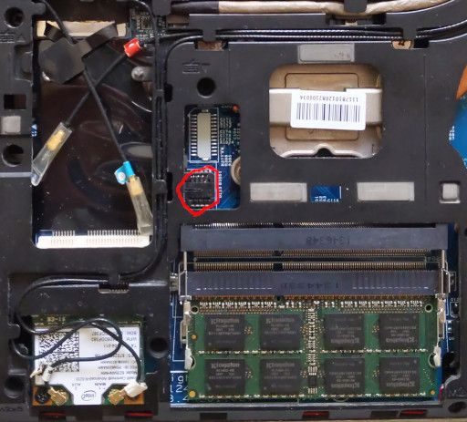

HP EliteBook 2170p
This page is about the notebook HP EliteBook 2170p.
Release status
HP EliteBook 2170p was released in 2012 and is now end of life. It can be bought from a secondhand market like Taobao or eBay.
Required proprietary blobs
The following blobs are required to operate the hardware:
EC firmware
Intel ME firmware
EC firmware can be retrieved from the HP firmware update image, or the firmware backup of the laptop. EC Firmware is part of the coreboot build process. The guide on extracting EC firmware and using it to build coreboot is in document HP Laptops with KBC1126 Embedded Controller.
Intel ME firmware is in the flash chip. It is not needed when building coreboot.
Programming
The flash chip is located between the memory slots, WWAN card and CPU, covered by the base enclosure, which needs to be removed according to the Maintenance and Service Guide to access the flash chip. Unlike other variants, the flash chip on 2170p is socketed, so it can be taken off and operated with an external programmer.
Pin 1 of the flash chip is at the side near the CPU.

For more details have a look at the general flashing tutorial.
Debugging
The board can be debugged with serial port on the dock or EHCI debug. The EHCI debug port is the left USB3 port.
Test status
Known issues
GRUB payload freezes if at_keyboard module is in the GRUB image ([bug #141])
Untested
Fingerprint Reader
Dock: Parallel port, PS/2 mouse, S-Video port
Working
Integrated graphics init with libgfxinit
SATA
Audio: speaker and microphone
Ethernet
WLAN
WWAN
Bluetooth
SD Card Reader
SmartCard Reader
USB
DisplayPort
Keyboard, touchpad and trackpoint
EC ACPI support and thermal control
Dock: all USB ports, DVI-D, Serial debug, PS/2 keyboard
TPM
Internal flashing when IFD is unlocked
Using
me_cleaner
Technology
CPU |
Intel Sandy/Ivy Bridge (FCPGA988) |
PCH |
Intel Panther Point QM77 |
EC |
SMSC KBC1126 |
Coprocessor |
Intel Management Engine |